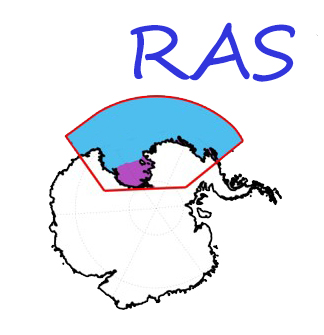

|  | The Ross Sea-Amundsen Sea high-resolution ocean-sea ice-ice shelf model (RAS model) was developed based on the Regional Ocean Modeling System (ROMS v3.6). The RAS model domain covers the entire Ross Sea and Amundsen Sea including the portion underneath the floating ice shelves. The domain extends from roughly 85.6°S to 64.2°S, 143.0°E to 89.9°W. The model resolution is about 3 km in both horizontal dimensions and includes 32 vertical levels, which are concentrated toward the top and bottom surfaces. |
Model Description
由XXX创建[PDF]
Atmosphere forcing
由XXX创建[PDF]
Boundary conditions
由XXX创建[PDF]
Initial conditions
Initial conditions of temperature and salinity are taken from the 10-km horizontal-resolution circum-Antarctic ocean–sea ice–ice shelf model (Dinniman et al., 2015). [PDF]
Modelling log
[txt]
Q&A
[txt]
Preprocessing tools[MATLAB code]
Data processing tools[PDF]
Model Codes[PDF]
XXXXXXXXXXXXX
作者一, 作者二, 作者三 and 作者四
Chuan xie
email: xiechuan@sjtu.edu.cn
Shanghai JiaoTong University, School of Oceanography